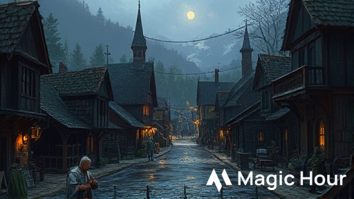
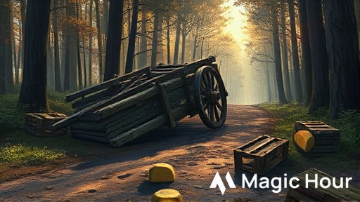
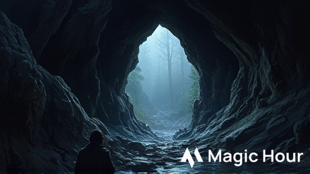
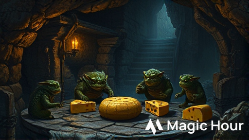

Avventura One-Shot per D&D 5a Edizione
Durata: 3 ore (4-5 scene)
Livello personaggi: 1
Giocatori: 4-5 + Dungeon Master
Ambientazione: Phandalin, Forgotten Realms
Temi: Investigazione leggera, combattimento, problem solving
I personaggi vengono ingaggiati da Elsa Greenbarrel, proprietaria della Casera di Phandalin, per consegnare un carico prezioso di formaggi stagionati al Sindaco di Neverwinter per un banchetto importante. Quella che doveva essere una semplice consegna si trasforma in un'avventura quando i PG scoprono che il carro è stato assaltato da creature inaspettate: un gruppo di Kobold golosi che hanno sviluppato un'ossessione per il formaggio stagionato.
Ruolo: Proprietaria della Casera di Phandalin
Razza: Halfling
Allineamento: Legale Buono
Descrizione: Una halfling robusta sulla cinquantina, con le mani callose dal lavoro e un sorriso sempre pronto. Indossa un grembiule macchiato di caglio e ha i capelli raccolti in una crocchia pratica.
Personalità:
Dialogo di introduzione:
"Ah, finalmente! Siete gli avventurieri che cercavo! Vedete, ho un problema... anzi, un'opportunità! Il Sindaco di Neverwinter ha ordinato i miei migliori formaggi per un banchetto, ma il mio solito trasportatore si è ammalato. Pagate voi 50 monete d'oro per portare il carico sano e salvo a Neverwinter? È a solo mezzo giorno di viaggio, e i miei formaggi sono ben confezionati!"
Ruolo: Leader dei Kobold ladri di formaggio
Razza: Kobold
Allineamento: Caotico Neutrale
Descrizione: Un kobold più grosso della media, con squame marrone-rossastre e un odore pungente di formaggio andato a male. Indossa un collare fatto di cortecce di formaggio stagionato.
Personalità:
Luogo: Casera di Elsa Greenbarrel, Phandalin
Durata: 15-20 minuti
Box Testuale da Leggere:
Entrando nella Casera di Elsa, vi avvolge un profumo intenso e pungente di formaggio stagionato. Scaffali di legno lungo le pareti sostengono dozzine di forme di formaggio di varie dimensioni, alcune coperte di cera rossa, altre con muffe verdastre che testimoniano la loro lunga stagionatura. Al centro della stanza, una halfling robusta sta confezionando con cura una grande forma in un panno di lino.
Alzando lo sguardo, vi sorride: "Ah, finalmente! Siete gli avventurieri che cercavo!"
Luogo: Strada da Phandalin a Neverwinter
Durata: 10 minuti
Box Testuale da Leggere:
La strada che porta a Neverwinter si snoda dolcemente tra campi coltivati e piccoli boschi. Il sole del mattino è piacevole, e Toby il mulo procede con passo sicuro, trascinando il carro carico di formaggi. L'odore pungente dei formaggi stagionati vi accompagna, impossibile da ignorare.
Dopo circa un'ora di viaggio, la strada entra in una zona più boscosa. Gli alberi si infittiscono ai lati, creando zone d'ombra. È in questo punto che Toby si ferma improvvisamente, nitrendo nervosamente.
Luogo: Strada, zona boscosa
Durata: 20-30 minuti
Box Testuale da Leggere:
Avvicinandovi, vedete un carro simile al vostro, rovesciato su un lato. Le ruote girano ancora lentamente. Attorno sono sparse casse rotte e, sorprendentemente, diverse forme di formaggio con morsi evidenti. Il tessuto che copriva il carico è strappato in più punti. Non c'è traccia del conducente o del mulo che trainava il carro.
Dall'interno del bosco, sentite strani versi acuti e quello che sembra il rumore di creature che masticano.
Luogo: Piccola grotta nel bosco
Durata: 30-40 minuti
Box Testuale da Leggere:
Le tracce vi conducono per circa venti minuti attraverso il bosco, fino a un piccolo affioramento roccioso. Tra le rocce si apre l'imboccatura di una grotta, larga abbastanza per farvi passare chinati. Un odore intenso di formaggio marcio esce dalla grotta, mescolato all'odore caratteristico dei kobold: un mix di terra umida e zolfo.
Dall'interno sentite voci acute che gracchiano in draconico, intervallate da versi di soddisfazione e rutti.
Procede a Scena 5
Luogo: Camera del Deposito
Durata: 30-40 minuti
Box Testuale da Leggere:
Irrompendo nella camera più ampia, vedete una scena quasi comica: quattro kobold sono seduti in cerchio attorno a un mucchio di forme di formaggio, alcune già mezzo mangiate. Stanno discutendo animatamente in draconico, gesticolando verso le loro prede. Al centro, un kobold più grande degli altri tiene stretto un pezzo di formaggio come fosse un tesoro.
Al vostro arrivo, tutti si girano di scatto. Il leader emette un grido acuto: "Intrusssi! Proteggere il tesssoro puzzzzolente!"
Piccolo umanoide (kobold), legale malvagio
CA 12 | PF 5 (2d6-2) | Velocità 9 m
FOR 7 (-2) | DES 15 (+2) | COS 9 (-1)
INT 8 (-1) | SAG 7 (-2) | CAR 8 (-1)
Sensi: Scurovisione 18 m, Percezione passiva 8
Linguaggi: Comune, Draconico
GS: 1/8 (25 PE)
Tattiche di Branco: Vantaggio agli attacchi se alleato entro 1,5 m
Sensibilità alla Luce Solare: Svantaggio in luce solare diretta
AZIONI:
Pugnale: +4 al colpire, portata 1,5 m. Danni: 4 (1d4+2) perforanti
Fionda: +4 al colpire, gittata 9/36 m. Danni: 4 (1d4+2) contundenti
Piccolo umanoide (kobold), caotico neutrale
CA 13 | PF 12 (4d6-2) | Velocità 9 m
FOR 8 (-1) | DES 16 (+3) | COS 10 (0)
INT 10 (0) | SAG 8 (-1) | CAR 10 (0)
Sensi: Scurovisione 18 m, Percezione passiva 9
Linguaggi: Comune, Draconico
GS: 1/4 (50 PE)
Odore Nauseante: Creature entro 1,5 m: TS Costituzione CD 10 o svantaggio
AZIONI:
Spada Corta: +5 al colpire, portata 1,5 m. Danni: 5 (1d6+3) perforanti
Lancio Formaggio Marcio: +5 al colpire, gittata 6/18 m. Danni: 3 (1d4+2) contundenti + TS Cost. CD 11 o avvelenato
Luogo: Phandalin, Casera di Elsa
Durata: 10-15 minuti
Box Testuale da Leggere:
Tornando a Phandalin con i formaggi recuperati, Elsa vi accoglie con un sorriso radioso. Esamina il carico, sospira vedendo i danni, ma annuisce soddisfatta.
"Ce l'avete fatta! Non sono tutti perfetti, ma la maggior parte sono ancora vendibili. E soprattutto, avete protetto la mia reputazione! Il Sindaco non sarà deluso. Ecco la vostra ricompensa, ben meritata!"
Totale PE possibili: 300-450 PE per giocatore